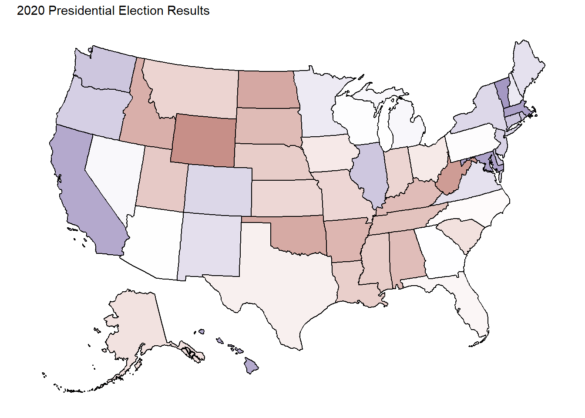
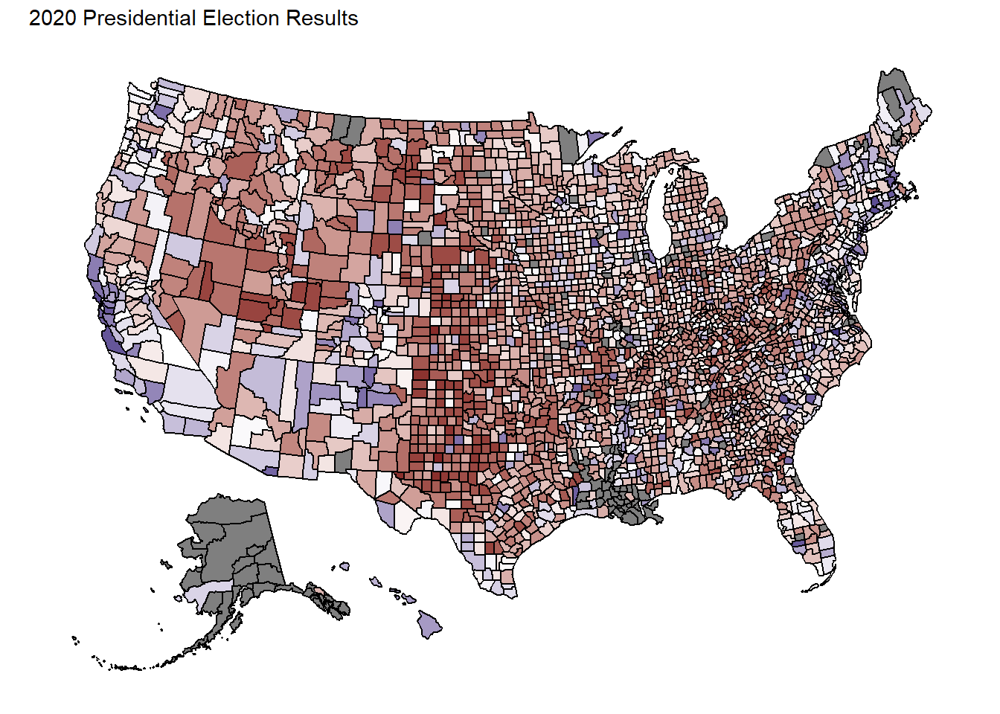
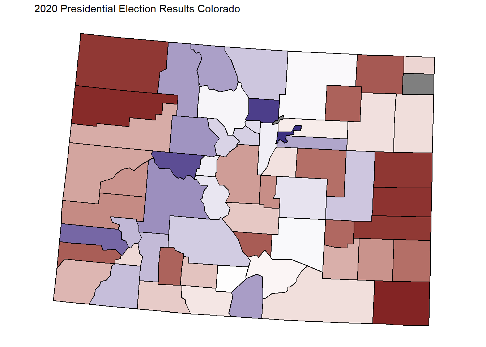
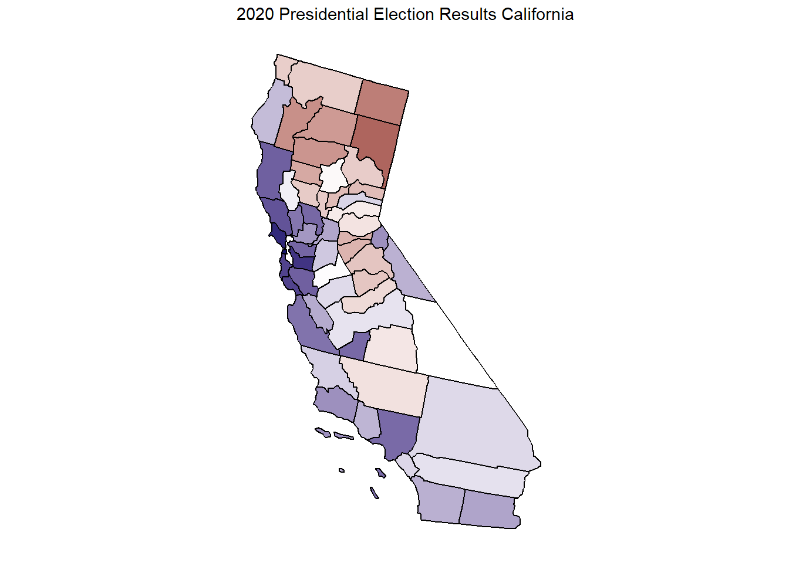
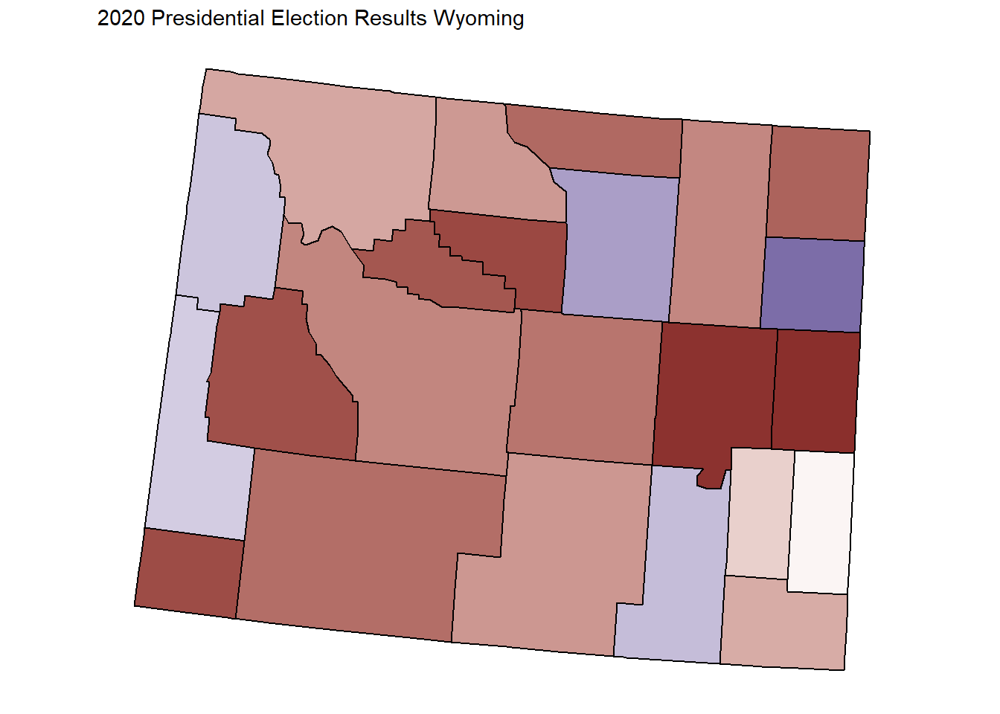
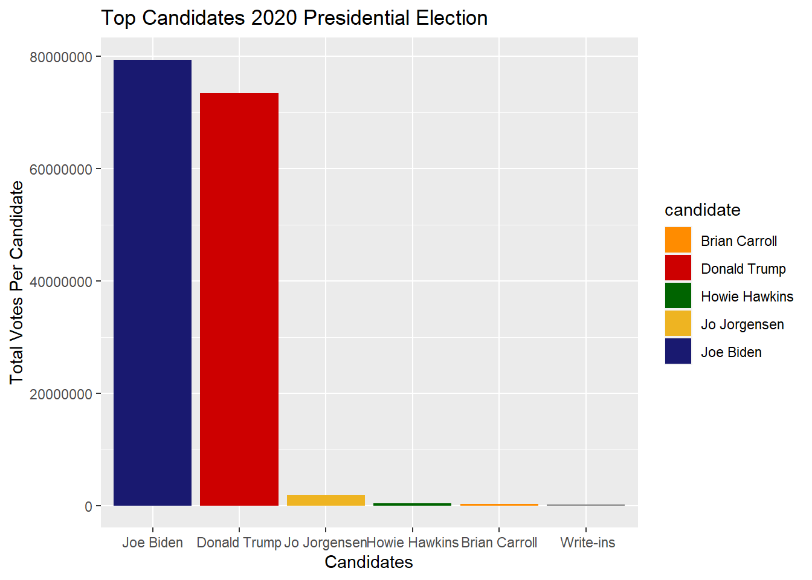
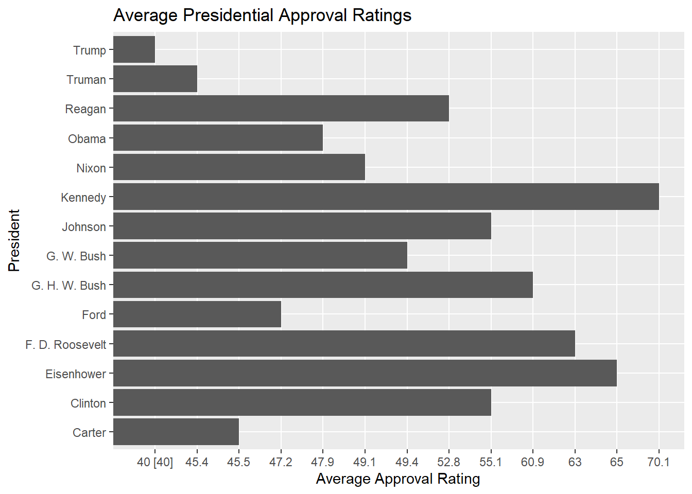

For my STAT 2600 project I created visuals for the 2020 Presidential Election: Trump vs. Biden. I thought it would be interesting to be able to make my own unbiased visuals in order to have a better understanding of the results this year. I found a data set that contained important election information such as county, state, and election votes in every county in the U.S. I eventually merged and cleaned data to match so I could see the election more precisely. I zoom into states that stand out to me and identify interesting patterns. This project focuses overall on the maps but still concludes with a big picture look as well as current events.
plot_usmap(data= democrat, values = "ratio")+
labs(title = "2020 Presidential Election Results")+
scale_fill_gradient2(high = ("midnightblue"), low = muted("red4"), midpoint = .5)+
theme(legend.position = "none")
Map Details:
* The white states means the vote
was almost 50 50. * The more blue the state is, the more people voted
for Joe Biden. * The more red the state is, the more people voted for
Donald Trump.
plot_usmap(data= democrat_county, values = "ratio")+
labs(title = "2020 Presidential Election Results")+
scale_fill_gradient2(high = ("midnightblue"), low = muted("red4"), midpoint = .5)+
theme(legend.position = "none")
This map shows how each county in the United States voted.
Immediately I am stunned because ultimately Joe Biden won the election,
but a lot of red covers the map. I could have predicted this
intuitively, but the degree of it is higher than expected.
plot_usmap("county",data=democrat_county, values = "ratio", include = c(.mountain), exclude = c("AZ","ID","MT","NV","NM","UT",'WY'))+
labs(title = "2020 Presidential Election Results Colorado")+
scale_fill_gradient2(high = ("midnightblue"), low = muted("red4"), midpoint = .5)+
theme(legend.position = "none")
This map shows how each county in Colorado voted. There is a lot of
blue and red which demonstrates that Colorado is more of a swing state.
55.4% of the vote went to Joe Biden, so Colorado was a blue state for
this race.
plot_usmap("county",data=democrat_county, values = "ratio", include = c(.pacific), exclude = c("AK", "HI", "OR", "WA"))+
labs(title = "2020 Presidential Election Results California")+
scale_fill_gradient2(high = ("midnightblue"), low = muted("red4"), midpoint = .5)+
theme(legend.position = "none")
This map shows how each county in California voted. Since
California is a blue state it wasn’t surprising that most counties voted
for Joe Biden in this election. 63.5% of the vote went to Joe Biden.
plot_usmap("county",data=democrat_county, values = "ratio", include = c(.mountain), exclude = c("AZ","ID","MT","NV","NM","UT",'CO'))+
labs(title = "2020 Presidential Election Results Wyoming")+
scale_fill_gradient2(high = ("midnightblue"), low = muted("red4"), midpoint = .5)+
theme(legend.position = "none")
This map shows how each county in Wyoming voted. Since Wyoming is
typically a red state most of the counties voted for Donald Trump. 69.9%
of the vote went to Donald Trump.
president_county = read.csv("C:\\Users\\maete\\Downloads\\STAT2600\\president_county.csv")
president_state = read.csv("C:\\Users\\maete\\Downloads\\STAT2600\\president_state.csv")
president_county_candidate = read.csv("C:\\Users\\maete\\Downloads\\STAT2600\\president_county_candidate.csv")
#view(president_county_candidate)
#view(president_state)
max_voted_candidate <- president_county_candidate %>%
group_by(candidate) %>%
summarize(total_votes_by_candidate = sum(total_votes))%>%
arrange(desc(total_votes_by_candidate))%>%
filter(total_votes_by_candidate>100000)
#view(max_voted_candidate)
options(scipen = 999) ##removes scientific notation
ggplot(max_voted_candidate)+
geom_col(mapping = aes(x=reorder(candidate, -total_votes_by_candidate), y=total_votes_by_candidate, fill=candidate))+
ggtitle("Top Candidates 2020 Presidential Election")+
xlab("Candidates")+
ylab("Total Votes Per Candidate")+
scale_fill_manual(values = c( "Joe Biden"="midnightblue", "Donald Trump"="red3", "Jo Jorgensen"="goldenrod2", "Howie Hawkins"="darkgreen", "Brian Carroll"="darkorange", "Write-ins"="gray77"))
The code above is to graph the top 6 candidates in descending order from Joe Biden getting the most votes to the write ins getting the least amount of votes. Each color is chosen by what that party’s color is.
## # A tibble: 6 × 2
## candidate total_votes_by_candidate
## <chr> <int>
## 1 "Joe Biden" 79409294
## 2 "Donald Trump" 73472591
## 3 "Jo Jorgensen" 1837566
## 4 "Howie Hawkins" 386737
## 5 "Brian Carroll" 219899
## 6 " Write-ins" 154724This table shows the exact number of votes each candidate got in the
race. ## Donald Trump’s Approval Rating Calculation #
{r} # trump = read.csv("C:\\Users\\maete\\Downloads\\donaldtrumpapproval.csv") # #trump # trump$Start.Date = mdy(trump$Start.Date) #mdy is month, date, year to change format # trump$End.Date = mdy(trump$End.Date) # trump = arrange(trump, -desc(Start.Date)) #arranges dates in ascending order # #summary(trump) # trump_average_approval = # trump %>% # dplyr::select(Start.Date, Approving) %>% # summarize(average_approval = mean(Approving)) # trump_average_approval #
presidentsapproval = read.csv("C:\\Users\\maete\\Downloads\\STAT2600\\allpresidentsapproval.csv")
#view(presidentsapproval)
ggplot(data=presidentsapproval)+
geom_col(mapping = aes(x = President, y=Approvalaverage.37.))+
ggtitle("Average Presidential Approval Ratings")+
ylab("Average Approval Rating")+
scale_fill_manual(values = c( "Trump"="red3", "Truman"="yellow"))+
coord_flip()
The code above shows the approval ratings of the past 14
presidents. Trump’s average approval rating which turns out to be 43%.
Although this isn’t as relevant to the rest of the data, I thought it
was interesting to get a visual on other candidates in the past.
To make sure that all of my results were accurate, I compared them to professional plots made for the election results and they were practically identical. A common argument for this topic is widespread voter fraud where the count of all the ballots would be incorrect. Currently there isn’t proof of this but FBI investigations are still searching for any fraud that did occur in this election.
According to The Associated Press the actual vote count for Biden was 81,283,009 and the vote count for Donald Trump was 74,223,287. The difference between Biden’s vote count and mine was that mine was short 1,873,715 votes, and the difference between Trump’s vote count and mine was short 750,696 more than the actual vote count.
Joe Biden won the 2020 election with Donald Trump as a close second. You can see from the map how each state voted by looking at the shade of color. Many states were almost white which meant that they’re mostly swing states. The states that are dark blue are primarily states that were already democratic, and states that were dark red were already mostly republican. It will be interesting to see Joe Biden’s approval compared to the rest of the candidates seeing as this years election was so close, and Donald Trump’s ratings are some of the lowest in history.
president_county_candidate = read.csv("C:\\Users\\maete\\Downloads\\STAT2600\\president_county_candidate.csv")
democrat <- president_county_candidate%>%
group_by(candidate, state) %>%
summarize(total_votes_by_candidate = sum(total_votes))%>%
filter(candidate =="Joe Biden"|candidate == "Donald Trump")%>%
group_by(state)%>%
summarize(ratio = total_votes_by_candidate/ sum(total_votes_by_candidate), candidate=candidate)%>%
filter(candidate == "Joe Biden")## `summarise()` has grouped output by 'candidate'. You can override using the
## `.groups` argument.## Warning: Returning more (or less) than 1 row per `summarise()` group was deprecated in
## dplyr 1.1.0.
## ℹ Please use `reframe()` instead.
## ℹ When switching from `summarise()` to `reframe()`, remember that `reframe()`
## always returns an ungrouped data frame and adjust accordingly.
## Call `lifecycle::last_lifecycle_warnings()` to see where this warning was
## generated.## `summarise()` has grouped output by 'state'. You can override using the
## `.groups` argument.Explanation of Cleaning Code:
In order to create a map of the
election data I needed to start by organizing the data where I would get
a table that I can work with for ggplot. I started by grouping the
candidate and state together and using summarize to add the total number
of votes for the candidates by state. Since I only wanted republican vs
democrat I put a filter on the candidates to make it where the only
votes shown are Joe Biden’s and Donald Trump’s. To calculate the
percentage of people that voted republican vs democrat I took the newly
calculate total_votes_by_candidate for one candidate and divide it by
the total number of votes for the two candidates. I had to add
candidate=candidate to add a candidate column to the spreadsheet. Since
it doesn’t matter whether or not you graph based on republican or
democratic since the percentages will be accurate either way, then I
just chose to graph based on the percentage of people that voted for
Biden.
county_fips_code = read.csv("C:\\Users\\maete\\Downloads\\Book1.csv")
democrat_county <- president_county_candidate%>%
group_by(candidate, county) %>%
summarize(total_votes_by_candidate = sum(total_votes))%>%
filter(candidate =="Joe Biden"|candidate == "Donald Trump")%>%
group_by( county)%>%
summarize(ratio = total_votes_by_candidate/ sum(total_votes_by_candidate), candidate=candidate)%>%
filter(candidate == "Joe Biden")%>%
mutate(county = str_remove(county," County"))%>%
left_join(county_fips_code, by="county")%>%
# rename(fips = ï..fips )%>%
ungroup()%>%
dplyr::select(fips, ratio, candidate)%>%
mutate(fips = as.character(fips))%>%
filter(!is.na(fips))## `summarise()` has grouped output by 'candidate'. You can override using the
## `.groups` argument.## Warning: Returning more (or less) than 1 row per `summarise()` group was deprecated in
## dplyr 1.1.0.
## ℹ Please use `reframe()` instead.
## ℹ When switching from `summarise()` to `reframe()`, remember that `reframe()`
## always returns an ungrouped data frame and adjust accordingly.
## Call `lifecycle::last_lifecycle_warnings()` to see where this warning was
## generated.## `summarise()` has grouped output by 'county'. You can override using the
## `.groups` argument.## Warning in left_join(., county_fips_code, by = "county"): Detected an unexpected many-to-many relationship between `x` and `y`.
## ℹ Row 10 of `x` matches multiple rows in `y`.
## ℹ Row 243 of `y` matches multiple rows in `x`.
## ℹ If a many-to-many relationship is expected, set `relationship =
## "many-to-many"` to silence this warning.Explanation of Code Above:
* Errors do not *
Started with same code for state map but replaced state with county *
Had to download a separate file that had the county fips code because
plot_usmap doesn’t contain those values * Took county fips code data set
and made changes to it where it would be able to join the democrat
county data set. This involved changing the county names so they
matched, and selecting the columns needed to have the fips match the
county.
Copyright © 2016 Skynet, Inc. All rights reserved.